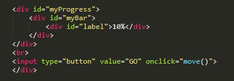
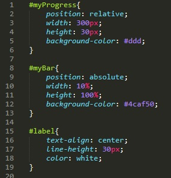
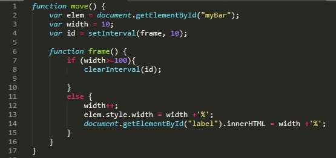

Начнем с HTML
В родительский блок myProgress мы помещаем блок myBar в котором в свою очередь помещаем блок label. Чуть ниже помещаем кнопку которая в событии onclick вызывает функцию move
Рассмотрим файл CSS
#myProgress - стилизуем контейнер
#myBar - стилизуем блок прогресса
#label - стилизуем надпись процентов прогресса
Рассмотрим код JavaScript
В начале функции move объявляются три переменные. Первая - становится объектом элемента с ID=myBar. вторая переменная типа int и в нее помещается значение 10. Третьей переменной присваивается таймер-планировщик который будет запускать функцию frame с периодичностью в 10 милисекунд.
Далее рассмотрим что делает функцию frame. Эта функция проверяет значение переменной width. Если значение больше или равно 100, у переменной id (которой задали планировщик) удаляется этот самый планировщик. Иначе, то переменной width присваивается инкремент, затем значение переменной width присваивается значению width - свойству элемента myBar, а атак же значение переменной width отображается в html внутри тега div с id="label"